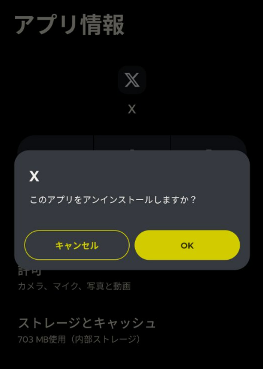

あなたの人生、残りどれくらい？
限りある自由な時間。
平均的な睡眠時間(7時間)と寿命(84歳)を元に、
あなたに残された貴重な時間を計算します。
この時間で、絶対にやりたいこと
具体的な期限を決めると、夢はぐっと近づきます。
例えばこんなふうに、期間と結びつけてみませんか？
↓ クリックして、あなたの時間を最大化するヒントを読む
あなたの残り時間を「最高の時間」に変えるヒント
「好きなこと探し」をしてる時点で、あなたは動いてない
「好きなことが見つからない」
このセリフ、SNSでも日常会話でも、耳タコになるほど聞きます。
でも、この言葉の裏にはもう一つの本音が隠れています。
それは──
「自分はまだ動いてないけど、動きたくなる理由を探してます」ということ。
冷たく聞こえるかもしれませんが、これはほとんどの場合、事実です。
“好きなこと探し”って、じつは「過去の経験や感情の中をぐるぐる回る作業」です。
たとえば学生時代に好きだった趣味、昔ハマった音楽、あのとき感動した映画…
確かに大事な記憶ですが、それは“過去の環境”と“過去の自分”が作った好きです。
化石を掘り起こすように過去の感情を探しても、それは今の生活にフィットしない場合が多い。
そして、化石は掘った瞬間から古くなります。
あなたの“好き”も、見つけた瞬間から古びていく。
だから、それをゴールにするのは危険なんです。
好きより「やりたい」が強い理由
「好き」は感情。
感情は、天気みたいにコロコロ変わります。
昨日まで「これが好き！」だったのに、今日はもう飽きている。
SNSの流行や誰かの影響で、簡単に上書きされてしまう。
一方で「やりたい」は行動です。
行動は、現実を動かすレバーです。
やったら何かしらの変化が起きます。
変化が起きるからこそ、自分の中に“手応え”が残る。
たとえば──
- 本を読むのが好き → 書評ブログをやってみる
- 散歩が好き → 地元の観光マップを作ってみる
- 誰かの話を聞くのが好き → コーチングを学んでみる
これらは全部、動詞です。
動詞は結果を生みます。
そして結果は、新しい「好き」を作ることすらある。
つまり順番は、
好き → 行動 ではなく、行動 → 好き。
だから「好きがない」と悩む前に、とにかくやりたいことを小さくやってみるのが正解です。
それでも動けない理由は「環境がクソだから」
ここまで聞いても、「いや、それができないんだよ…」という声が必ず出ます。
その理由はシンプルです。
環境がクソだから。
同じデスク、同じ通勤路、同じ職場の顔ぶれ、同じSNSタイムライン。
この“同じ”に埋もれたまま「新しいひらめきがほしい」と思うのは、宝くじを買わずに当選発表を待つようなものです。
あなたの脳は、環境からの刺激で動きます。
つまり、刺激を変えなければ発想も変わらない。
ではどうするか？
場所を変えるんです。
- 日帰りでいいから、知らない街に行く
- 引っ越す気がなくても、不動産サイトで物件を見に行く
- 普段入らないカフェや図書館で過ごす
- まったく読んだことのないジャンルの本を開く
大きな引っ越しや長期旅行じゃなくてもいい。
ほんの数時間、場所を変えるだけで、思考は驚くほど軽くなります。
環境を変えてくれる本たち
ここからは、僕自身が「やりたいこと」に切り替えるきっかけをくれた5冊です。
どれも“読むだけで場所を変えたような感覚”になる本ばかり。
1. 『エッセンシャル思考』グレッグ・マキューン
「より少なく、しかしより良く」。
現代人は選択肢を増やしすぎて、自分を麻痺させています。
この本は、取捨選択の基準をくれる一冊。
→ 「全部やろうとして何も進まない」人に。
Amazonで見る

3. 『深夜特急』沢木耕太郎
旅のリアルが詰まった名作。
一歩踏み出したいけど怖いとき、背中を押してくれる物語。
Amazonで見る
4. 『やりたいことの見つけ方』八木仁平
自己分析の教科書。
「行動できないまま悩んでいる」人が理論で動けるようになる。
Amazonで見る
5. 『今日の人生』益田ミリ
日常の小さな豊かさを見つめ直すエッセイ漫画。
「やりたいことがなくても、別にいい」と思える救い。
Amazonで見る
結論：「好きなこと探し」は捨てていい
やりたいことは、頭の中ではなく、外にあります。
動いた先、出会った人、偶然手に取った本の中に、“変な引っかかり”として見つかるものです。
「好きなことが見つからない」は、終わりじゃありません。
むしろ、“やりたいこと”が見つかるスタート地点です。
まずは、この5冊のどれか1冊を手に取ってみてください。
その瞬間から、あなたの環境は確実に変わります。
深夜1時、ベッドで光るスマホ。あなたの時間を喰う“それ”の正体
深夜1時。あなたはベッドの中にいる。
部屋の電気は消えているのに、顔だけが青白く照らされている。
「あと1本だけ…」
そう思って開いたショート動画。気づけば1時間が経ち、指は勝手に次の動画をスワイプしている。
脳がじわじわと溶けていくような感覚。
そして、強烈な自己嫌悪と共に眠りにつく。
──これは、あなたのせいじゃない。
そのスマホの中にいる“それ”は、あなたの貴重な「時間」と「未来」をエサに成長するモンスターだ。
意志の力？ 根性？
そんなもので、人類史上最高の頭脳たちが作った時間泥棒に勝てるわけがない。
まずは、最大の時間泥棒をスマホから追い出せ
最初のステップは、敵の侵入経路を断つこと。
Instagram、X（旧Twitter）、TikTok…それらのアプリアイコンを長押しして、震え始めたら「Appを削除」を押す。たったこれだけ。
「でも、つながりが…」
大丈夫。本当に大事な人とは、アプリがなくてもつながれる。そして、アプリを消して生まれた時間で、あなたはもっと価値のあるつながりを現実世界で築けるようになる。
時間を取り戻す、たった一つの冴えたやり方
モンスターのエサを断ち切ったら、次にあなたの成長をエサにする“別の何か”をインストールする。
答えは、Audible（オーディブル）。
耳から、知識を、物語を、あなたの脳に直接流し込む。
- ゾンビのように往復していた通勤時間が、未来への投資時間に変わる。
- 虚無だった皿洗いの時間が、ベストセラー作家のセミナーに変わる。
- 退屈なランニングが、壮大な冒険の始まりに変わる。
「本を読む時間がない」んじゃない。
「耳のすきま時間」を、あなたはまだ使っていないだけだ。
今すぐ、人生の“奪還ボタン”を押せ
今、この瞬間も、あなたの時間はモンスターに喰われている。
でも、まだ間に合う。
下のリンクは、あなたの人生を取り戻すための“脱出ボタン”だ。
最初の1冊は、無料（タダ）で聴ける。
リスクはゼロ。得られるのは、失った時間と未来への希望だ。
さあ、ボタンを押せ。
そして、耳から人生を変えろ。